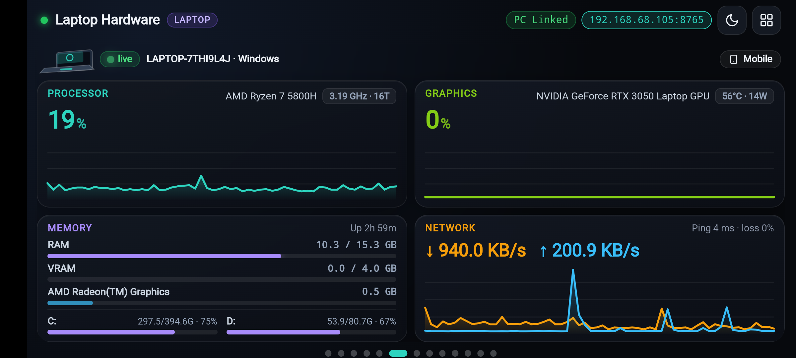
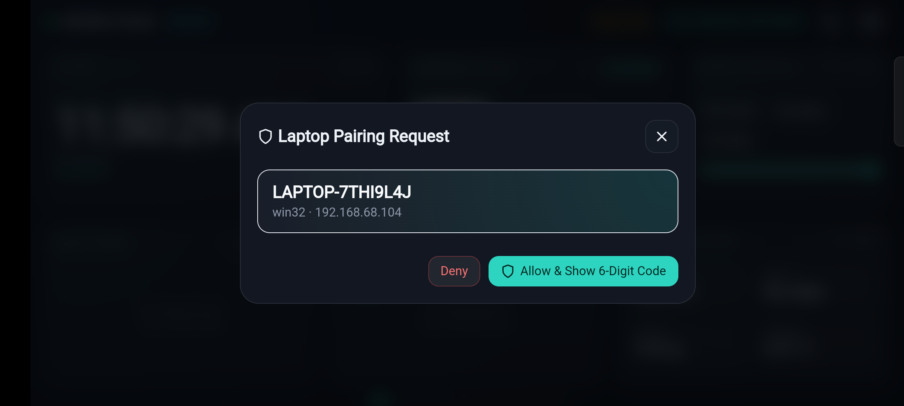
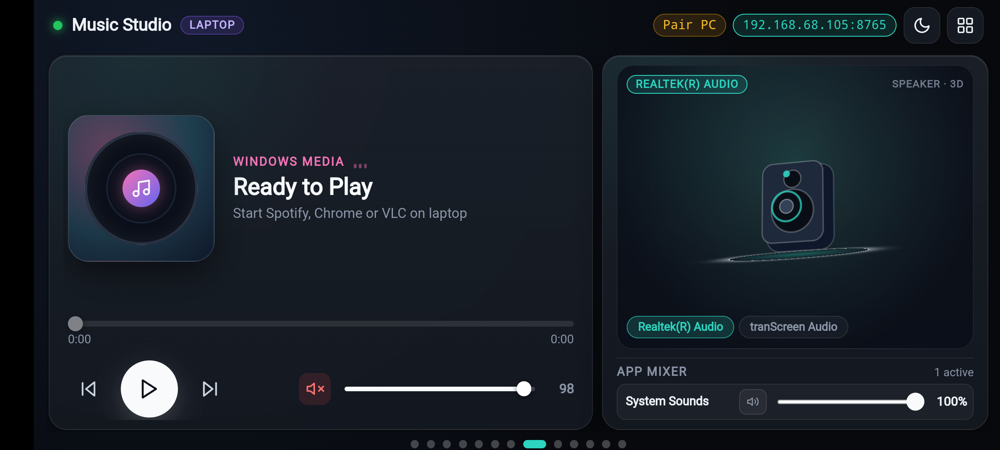
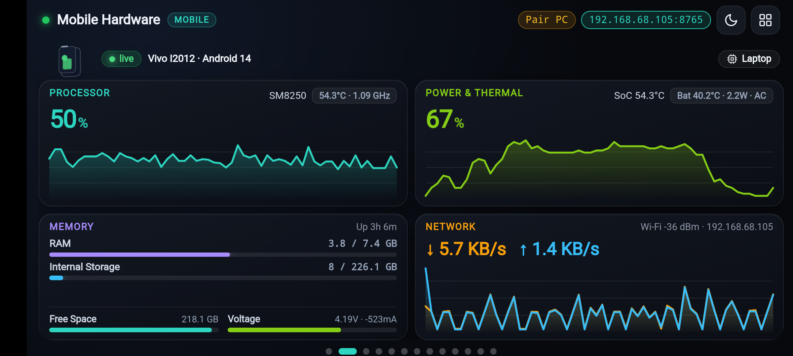
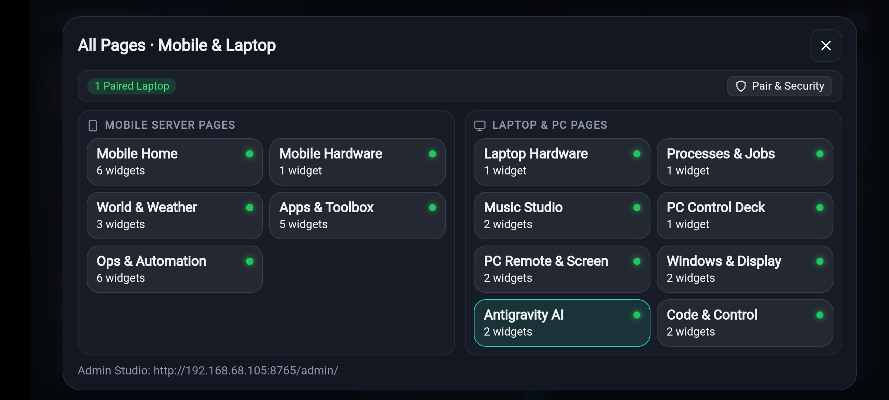
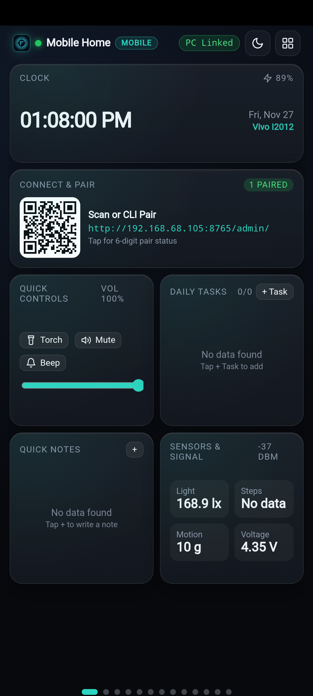

Control phone and laptop from one surface
Stream laptop telemetry, audio mix, and remote controls to Android over pairing.
friday connect

Pair every device with six digits
Protected endpoints stay locked until a phone user approves the laptop request and confirms the matching six-digit code.
- Before pairing
- Remote state and control routes reject requests with HTTP 401.
- After six-digit confirmation
- The laptop stores a cryptographic device token under your user profile.
- Run
friday connecton Windows to discover Wi-Fi or relay targets. - Approve the popup prompt on your Android phone screen.
- Enter the six digits shown on the phone into your terminal.

Separate screens for phone and laptop
Switch between live music controls, device sensors, hardware graphs, and the grouped directory without repeated widgets.




One persistent Windows host bridge
In-process WinRT, CoreAudio, and UI automation run inside a hidden host without opening background terminals.
- Wireless trackpad and screen
- Move the pointer, scroll, send shortcuts, and view desktop frames on the phone screen.
- Process exit pings
- Watch active Windows PIDs and alert the phone when long builds finish or go idle.
- Call-aware desktop mute
- Mute laptop media audio on incoming Android call notifications and restore afterward.
- Desktop OTP and quick reply
- Receive verification codes with one-click copy and inline desktop replies to phone notifications.
- Wi-Fi and self-hosted relay
- Prefer direct LAN first and route via Tailscale or the zero-dependency relay outside home.
Install on Android and Windows
Requires Android 8 or newer for the APK and Node 18 or newer on your PC.
| Step | Requirement | Command | Copy |
|---|---|---|---|
| Build Android APK | JDK 17 and Android SDK | ./gradlew assembleDebug |
|
| Pair laptop via six digits | Node 18 on Windows | friday connect |
|
| Check link and bridge daemon | Paired credentials | friday status |
|
| Launch anywhere relay | Node 18 VPS or host | PORT=8787 node relay/server.mjs |
Pair your devices in under two minutes
Clone the open-source repository, install the APK, and confirm the six-digit code on your phone.